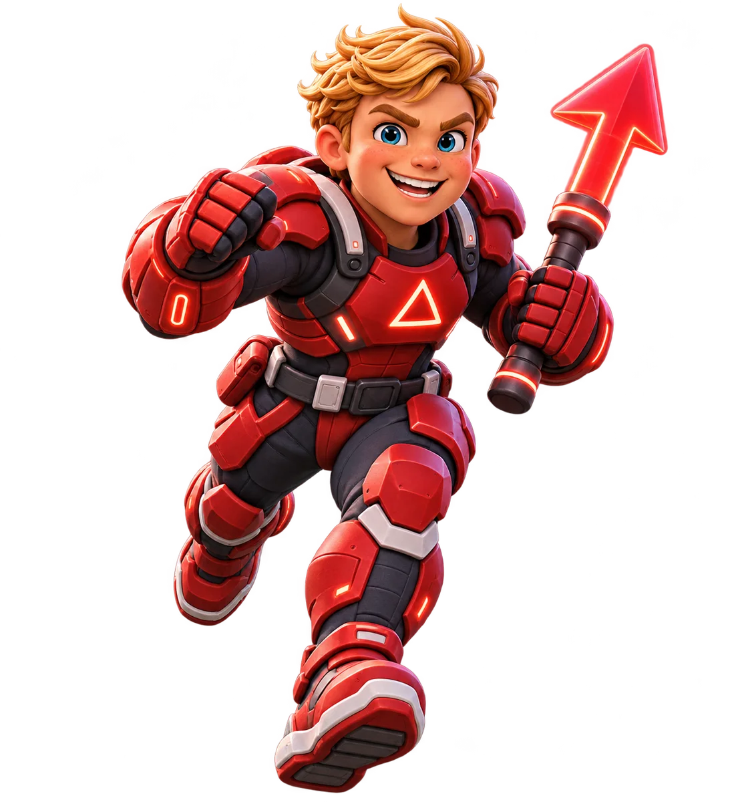

X / Forward
Xander
The heart that moves first.Bold, loyal, and built like a running back, Xander drives straight toward the problem. His challenge? Remembering that a great leader pauses long enough to bring everyone with him.
Captain energy · Football · Big forward punch